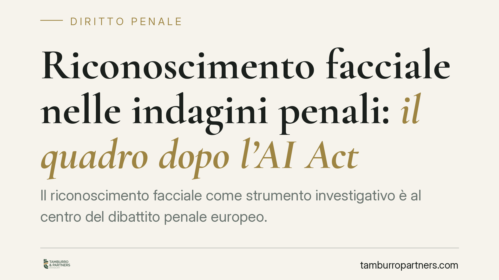

Riconoscimento facciale nelle indagini penali: il quadro dopo l'AI Act
Il riconoscimento facciale come strumento investigativo è al centro del dibattito penale europeo. Il Regolamento UE 2024/1689 (AI Act) classifica l'identificazione biometrica remota come tecnologia ad altissimo rischio, con divieto tendenziale ed eccezioni tassative. Comprendere questo perimetro è essenziale per chi valuta l'utilizzabilità di una prova biometrica in un procedimento penale.

Perché il tema riguarda già oggi la difesa penale
Il riconoscimento facciale applicato alle indagini non è più fantascienza. Alcune tecnologie di identificazione biometrica remota sono tecnicamente disponibili e circolano già in contesti investigativi. Manca però, allo stato, un intervento organico del legislatore italiano che le disciplini come autonomo mezzo di ricerca della prova nel codice di procedura penale.
È bene chiarirlo subito, per evitare fraintendimenti: al momento non risulta pubblicato in Gazzetta Ufficiale un decreto legislativo che introduca un nuovo articolo del c.p.p. dedicato all'identificazione biometrica remota in tempo reale. Le indicazioni circolate su numerazioni e date specifiche vanno trattate come ipotesi di lavoro, non come diritto vigente. Chi si occupa di difesa deve ragionare, oggi, sulla base solida esistente: la normativa europea.
L'inquadramento nell'AI Act (Reg. UE 2024/1689)
Il punto fermo è il Regolamento UE 2024/1689, noto come AI Act. Il regolamento qualifica i sistemi di identificazione biometrica remota come tecnologie ad alto rischio e pone un divieto tendenziale all'uso in tempo reale in spazi accessibili al pubblico a fini di attività di contrasto.
Si tratta di un divieto con eccezioni tassative. L'impiego è ammesso solo in casi delimitati — ad esempio la ricerca mirata di vittime di reati gravi o la prevenzione di una minaccia concreta e attuale — e comunque subordinato a garanzie stringenti, tra cui una previa autorizzazione da parte di un'autorità giudiziaria o amministrativa indipendente. La logica del regolamento è chiara: la biometria remota è l'eccezione, mai la regola.
Questo è il quadro entro cui, in prospettiva (de iure condendo), un eventuale intervento del legislatore italiano dovrebbe collocarsi. Un ipotetico nuovo mezzo di ricerca della prova andrebbe verosimilmente inserito tra le disposizioni sugli accertamenti tecnici del pubblico ministero (artt. 359 ss. c.p.p.), con autorizzazione preventiva del giudice per le indagini preliminari e perimetro d'uso circoscritto ai reati di maggiore gravità. Ma, ripetiamo, si tratta di una ricostruzione prospettica, non di diritto positivo.
Implicazioni pratiche per l'indagato e per la difesa
La domanda operativa è una sola: una prova ottenuta tramite riconoscimento facciale è utilizzabile nel processo?
L'inutilizzabilità è la sanzione processuale che colpisce le prove acquisite in violazione dei divieti di legge (art. 191 c.p.p.). La prova inutilizzabile non può essere posta a fondamento di alcuna decisione, nemmeno se materialmente presente nel fascicolo. Nel campo della biometria questo profilo è centrale: se l'acquisizione avviene fuori dal perimetro consentito dall'AI Act, senza le garanzie richieste o senza titolo autorizzativo idoneo, l'utilizzabilità del risultato è seriamente compromessa.
A questo si aggiunge un secondo fronte, tecnico ma decisivo: l'affidabilità dello strumento. Nessun sistema di riconoscimento facciale è infallibile. Il falso positivo — l'errata associazione tra il volto rilevato e un soggetto diverso — non è un'eventualità teorica ma un limite noto di queste tecnologie, che varia in base a qualità dell'immagine, condizioni di luce e caratteristiche del dataset di addestramento. Il tasso di errore può costituire un motivo difensivo autonomo, a prescindere dalla regolarità formale dell'acquisizione.
Cosa fare in concreto
- Verifica il titolo autorizzativo. Accerta se l'identificazione biometrica sia stata disposta con provvedimento idoneo e se rientri in una delle eccezioni ammesse; l'assenza di base legale incide direttamente sull'utilizzabilità.
- Ricostruisci la catena di custodia dei dati. Chiedi come sono stati raccolti, conservati e trattati i dati biometrici; interruzioni o opacità nella tracciabilità indeboliscono il valore probatorio.
- Contesta l'affidabilità tecnica. Solleva il tema del falso positivo e del margine di errore del sistema, se necessario tramite consulenza tecnica di parte.
- Esamina la proporzionalità dell'uso. Valuta se il ricorso alla biometria fosse necessario e proporzionato rispetto al reato contestato, come richiesto dall'AI Act.
- Distingui l'ipotesi dalla norma. Diffida di ricostruzioni che presentano come vigenti disposizioni non pubblicate: è opportuno un tempestivo vaglio tecnico del quadro effettivamente applicabile.
Una nota di metodo
Su una materia in rapida evoluzione, la prudenza è essa stessa una garanzia. Riferire come certo ciò che è ancora ipotesi legislativa disorienta il lettore e non aiuta la difesa. La base normativa oggi solida è l'AI Act: da lì parte ogni ragionamento serio sull'uso investigativo del riconoscimento facciale.
---
*Contributo informativo a cura di Tamburro & Partners - Avv. Giuseppe Tamburro. Non costituisce parere legale.*
Ogni condominio ha una storia a sé.
Se gestisci un'amministrazione e vuoi un confronto su una specifica questione condominiale, scrivi allo studio. Ti rispondiamo entro un giorno lavorativo.